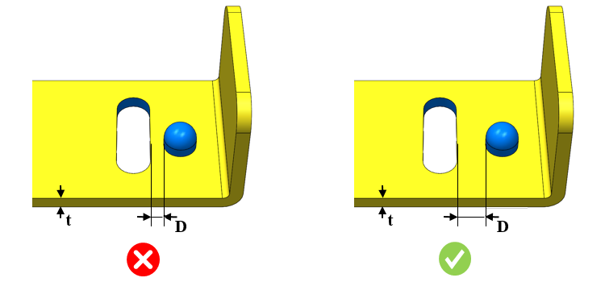

ダウエル穴エッジとカットアウトエッジ間の最小距離を板厚で割った比率は、ユーザーが指定した値以上である必要があります。
ダウエル穴エッジとカットアウトエッジ間の距離が最小値未満の場合、対象領域の板材に変形や割れが生じる可能性があります。ダウエル穴がエッジに近すぎると、エッジが変形して膨らみが生じることがあります。
一般的な指針として、ダウエル穴エッジとカットアウトエッジ間の最小距離は、板厚の少なくとも4倍であることが推奨されます。
ルールUIでは、材料の一覧が Map Material から読み込まれ、ユーザーは材料およびその値を構成することができます。
材料とその値を構成した後、ユーザーはCtrl+Mコマンドを使用して、ルールUI内で材料グループおよびグレードとともに構成済み材料の一覧をフィルタ表示できます。同じキー（Ctrl+M）を使用して、フィルタをリセットすることができます。

ここでは、
D = ダウエル穴エッジからカットアウトエッジまでの最小距離
t = 板厚
注記:
面取り（面取り加工）されたカットアウトもサポートされています。